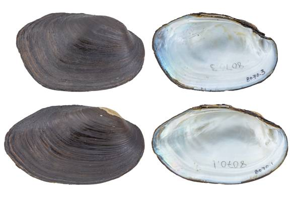

Toxolasma texasiense (Lea, 1857)
Texas Lilliput

Toxolasma texasiense – top image, female, upper Trinity River [Trinity River drainage], length 51.4 mm; bottom image, male, upper Trinity River [Trinity River drainage], length 62.7 mm.
Identification
Shell structure: moderately thick and somewhat compressed to inflated.
Shell outline: elongate elliptical to ovate.
Posterior ridge: broadly rounded but well-marked.
Shell color: olive-green, brown or black, may be lighter in color near the umbo; surface subglossy to cloth-like and dull.
Rays: usually none but occasionally may present fine rays.
Shell texture: without sculpture.
Umbo: low, broad, elevated slightly above the hinge line; umbo cavity shallow.
Umbo sculpture: single-looped bars, which appear comma-shaped.
Pseudocardinal teeth: triangular, erect, compressed, and ragged, 2 in the left, divergent and nearly parallel to the hinge line, 1 triangular tooth in the right valve.
Lateral teeth: long, thin to somewhat thick, straight to slightly curved, 2 in left valve, 1 in right valve.
Interdentum: short and narrow to almost lacking.
Nacre: white, blueish-white or salmon; iridescent posteriorly.
Other: sexually dimorphic, posterior margin is obliquely truncated in females and centrally rounded to pointed in males.
General range
Mississippi River basin from Louisiana north to southern Illinois and Indiana. Gulf Coastal Basins from the Rio Grande of Texas and Mexico to the Pascagoula River, Mississippi.
Habitat
Small streams to large rivers, oxbows, sloughs, lakes, ponds, canals, borrow pits, and reservoirs. In riverine habitats, often occurs in near shore habitats along banks and in backwater pools and oxbows. Primarily found in still to slow currents in mud and sand substrates, often with detritus, and may be found wedged in cracks in bedrock slabs, roots of trees along steep banks, or among macrophyte beds.
Legal listing status
USFWS: None